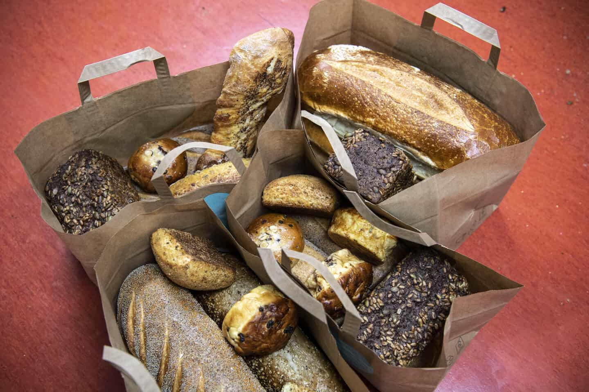

Forside
Hver eneste dag året rundt bliver næsten 2.000 ton mad smidt ud i Danmark. Og alt i alt tegner Danmarks samlede madspild sig for 700.000 ton årligt. En række af landets førende virksomheder, Danmarks største forening mod madspild, Stop Spild Af Mad, og organisationen FødevareBanken vil nu gøre op med det. Sammen lancerer de et banebrydende partnerskab, som under overskriften ”Danmark mod Madspild” skal samle danske forbrugere og virksomheder i kampen mod madspild.
Om Denne WebsitePå denne side kan organisationer og virksomheder registrere deres vare, de har til overs, og sælge dem her på discount. På siden kan du også tilgå disse vare og reservere dem.
Madspildet i den danske servicesektor udgør 227.000-ton pr. år. Til sammenligning er det samlede madspild fra husholdningerne 261.000-ton pr. år.
Det største madspild i servicesektoren stammer fra detailhandelen, der spilder 163.000 tons pr. år, svarende til 72 % af servicesektorens madspild.
Af detailhandelens madspild står specialforretninger som slagtere, fiskeforretninger og grønthandlere for 12.000 tons pr. år, mens ikke-specialiserede forretninger som kiosker, købmænd, supermarkeder og varehuse står for 151.000-ton pr. år.